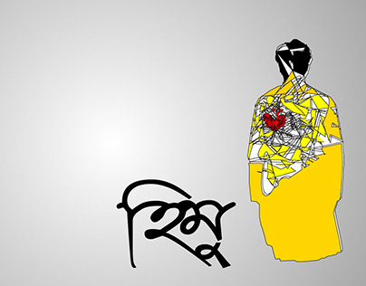
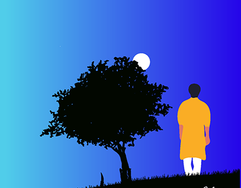
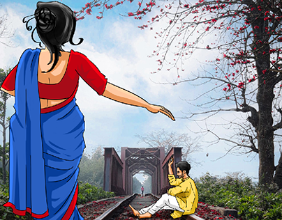
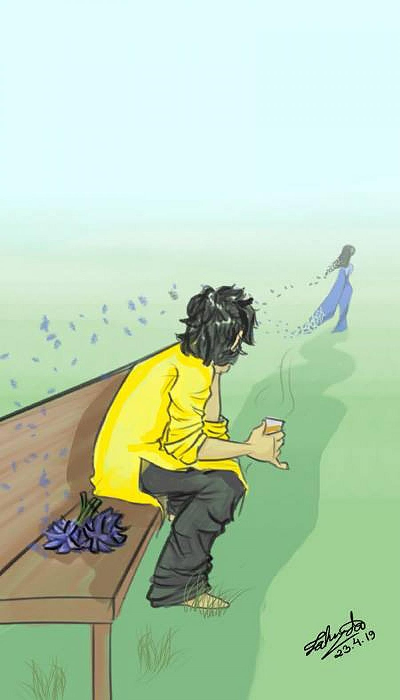
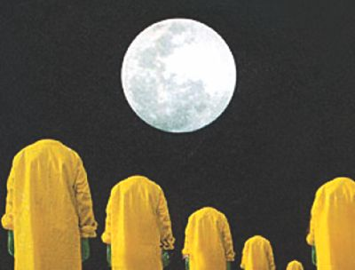

অধিকাংশ মানুষ কল্পনায় সুন্দর, অথবা সুন্দর দুর থেকে। কাছে এলেই আকর্ষণ কমে যায়। মানুষই একই। কারো সম্পর্কে যত কম জানা যায়, সে তত ভাল মানুষ।
পৃথিবীতে আসার সময় প্রতিটি মানুষই একটি করে আলাদিনের প্রদীপ নিয়ে আসে। কিন্তু খুব কম মানুষই সেই প্রদীপ থেকে ঘুমন্ত দৈত্যকে জাগাতে পারে।

“যখন মানুষের খুব প্রিয় কেউ তাকে অপছন্দ, অবহেলা কিংবা ঘৃণা করে তখন প্রথম প্রথম মানুষ খুব কষ্ট পায় এবং চায় যে সব ঠিক হয়ে যাক । কিছুদিন পর সে সেই প্রিয় ব্যক্তিকে ছাড়া থাকতে শিখে যায়। আর অনেকদিন পরে সে আগের চেয়েও অনেকবেশী খুশি থাকে যখন সে বুঝতে পারে যে কারো ভালবাসায় জীবনে অনেক কিছুই আসে যায় কিন্তু কারো অবহেলায় সত্যিই কিছু আসে যায় না।”
পৃথিবীতে কিছু কিছু মানুষ সম্ভবত কষ্ট পাবার জন্যই জন্মায়। টাকা পয়সার কষ্ট নয়, মানসিক কষ্ট।
কিছু কিছু মানুষ ভাগ্যকে নিজের হাতে গড়ে, আবার কারো কারো কাছে ভাগ্য আপনি এসে ধরা দেয়।
সরাসরি চোখের দিকে তাকিয়ে কেউ মিথ্যা বলতে পারে না। মিথ্যা বলতে হয় অন্যদিকে তাকিয়ে !
বয়সকালেই মানুষ ছোট খাট ভুল করতে থাকে। ছোটখাটো ভুল করা যখন অভ্যাস হয়ে যায় তখন করে বড় ভুল !
কাজল ছাড়া মেয়ে দুধ ছাড়া চায়ের মত।
মানুষ শুধু যে মানুষের কাছ থেকে শিখবে তা না। পশু পাখির কাছ থেকে অনেক কিছু শেখা যায়।
কখনো কখনো তোমার মুখটা বন্ধ রাখতে হবে। গর্বিত মাথাটা নত করতে হবে এবং স্বীকার করে নিতে হবে যে তুমি ভুল। এর অর্থ তুমি পরাজিত নাও, এর অর্থ তুমি পরিণত এবং শেষ বেলায় জয়ের হাসিটা হাসার ন্য ত্যাগ স্বীকারে দৃঢ় প্রতিজ্ঞ।
মানুষ ট্রেইনের মত এক লাইনে চলে। তবে বিশেষ ঘটনার পর নতুন লাইন পাওয়া যায়।
প্রতিটি দুঃসংবাদের সঙ্গে একটি করে সুসংবাদ থাকে।